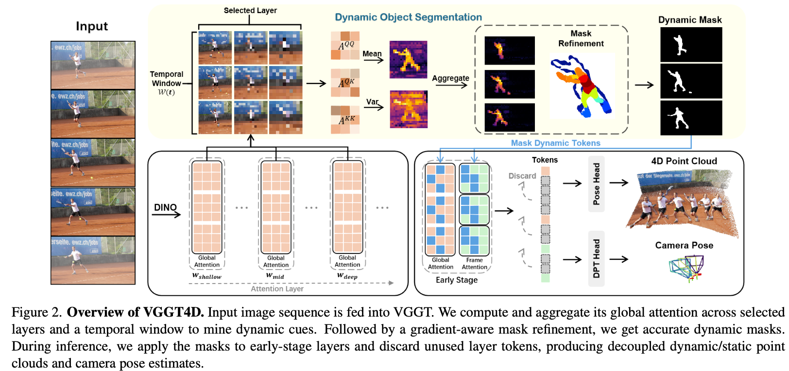
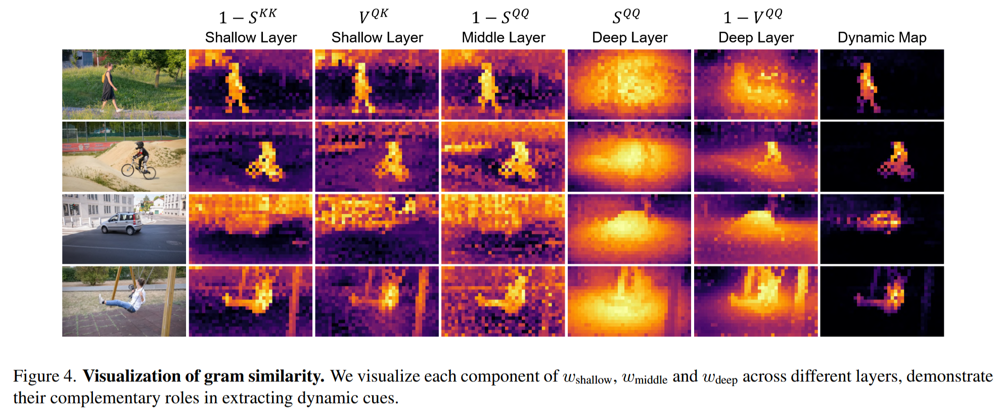
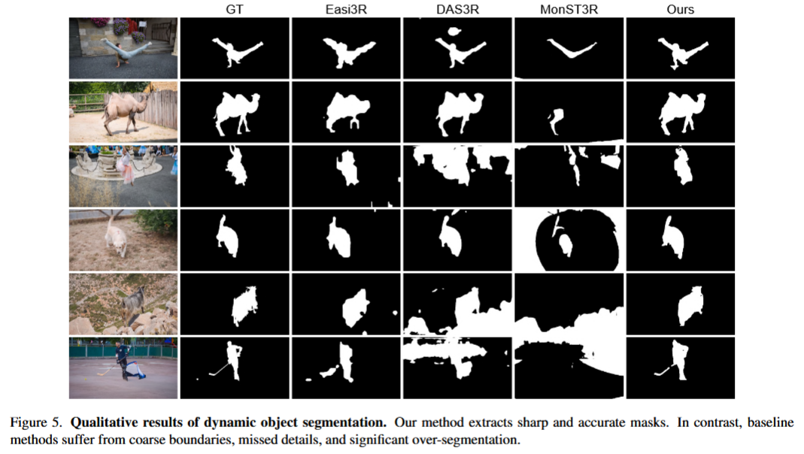
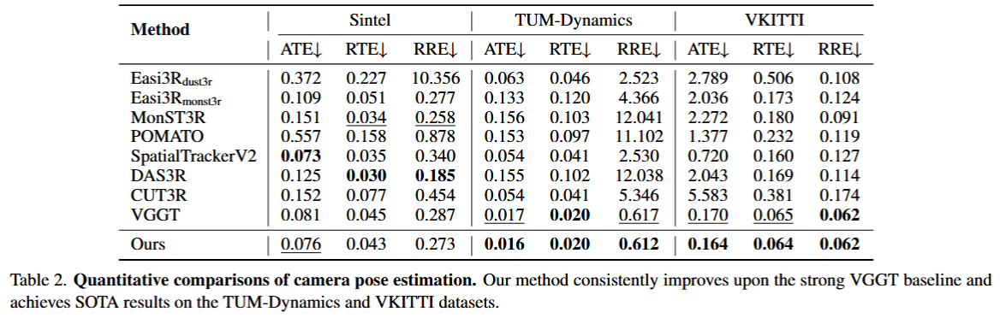
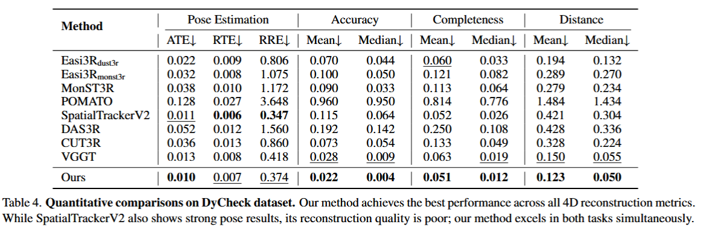
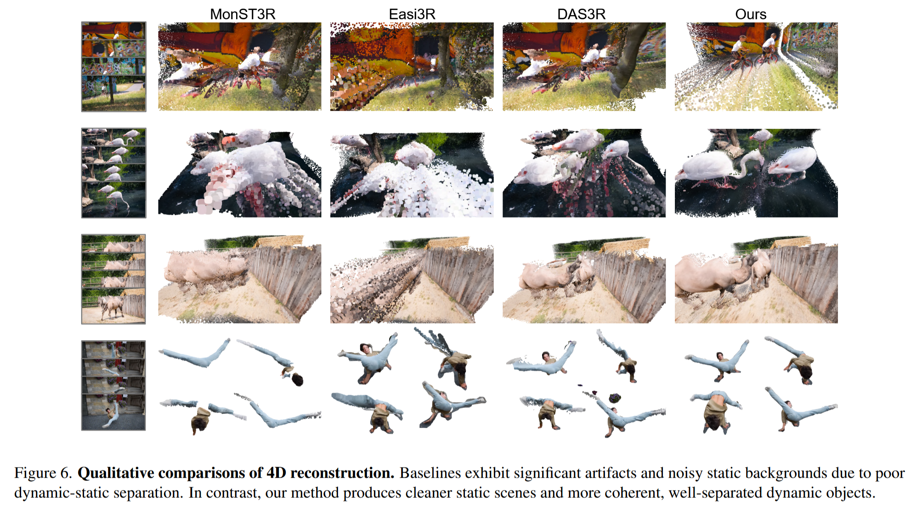

Training free; Dynamic-static decoupling pipeline; Superior generalization.
把一些动态信息的token mask掉来保证静态重建的稳定性。 通过 gram similarity 提取全局注意力里的动态信息，并生成Mask，然后把这些动态 token 屏蔽掉来保护静态背景的重建。
Easi3r 中利用 cross attention map 求出时间均值和方差图找动态做 mask → 本文利用 gram similarity 来找动态。
- 文中这么讲 Easi3r ：It captures only local feature interactions. This design imposes a short temporal horizon and yields masks that are inconsistent across frames, with boundary errors at dynamic–static interfaces that cause depth drift and floating artifacts in the reconstructed point clouds.
不同层级之间token的主要表现内容是变化的，浅层对语义上动态的对象响应强烈，深层逐渐抑制多视图几何关系不一致的像素。得到动态的mask之后，在浅层和中层屏蔽动态token。
如果在所有层中都mask掉动态Token那性能比不Mask还差，因为VGGT是用全图训练的，深度Mask会破坏分布。
还引入投影梯度驱动的细化策略锐化边界。
Pipeline

- 利用 gram similarity 来针对浅、中、深层不同时间窗的Q，K进行聚合，得到初步的mask。
- 通过投影梯度感知来优化mask，实现更好的动静解耦。
- 推理阶段利用mask来掩盖浅层中的动态信息，获得不被运动干扰的位姿估计与4D重建。
实现单次处理序列长度500+的内容。
（1）Dynamic Cue Extraction via Gram Similarity
在时间窗 W(t) = {t − n, ..., t − 1, t + 1, ..., t + n} 计算浅层、中层、深层的 gram similarity 的均值与方差来放大运动引起的分布差异（自相似矩阵）。
$$ A^{QQ}_{l,t,s} = \frac{Q_{l,t} Q_{l,s}^{\top}}{\sqrt{c}},\quad A^{KK}_{l,t,s} = \frac{K_{l,t} K_{l,s}^{\top}}{\sqrt{c}}. $$
Here c is the feature dimension, l indexes the layer, t and s denote the frame indices, and Np is the token count. In the following, X ∈ QQ, QK, KK
$S^{X}_{i\text{-}j}\ or \ V^{X}_{i\text{-}j}=\mathrm{Mean}_{s} \ or \ \mathrm{Var}_{s}\left(\frac{1}{|\mathcal{W}(t)|}\sum_{s \in \mathcal{W}(t)}\frac{1}{L}\sum_{l=i}^{j}A^{X}_{l,t,s}\right)$
wshallow = (1−SshallowKK) ⊙ VshallowQK wmiddle = 1 − SmiddleQQ wdeep = (1−VdeepQQ) ⊙ SdeepQQ
wshallow ==表示浅层信息中，均值小方差大的部分（语义显著，前景内容）；wmiddle 表示中层信息中该时间窗内均值小的部分（特征不稳定，也就是在变化的内容，动态）；wdeep 表示深层信息中，方差小均值大的部分（符合全局几何先验(多视图投影规律)，也就是非噪声信号）==。
wdeep : VGGT 的深层 (Layer 18-22) 处理的是三维空间的几何一致性。如果不符合几何规律（比如飘在空中的噪点），方差就会大，就会被 mask 掉。
浅层表示语义强度，中层识别运动（检测特征分布变化），深层不稳定的是噪声。
Dyn = wshallow ⊙ wmiddle ⊙ wdeep，掩码Mt = [Dyn>α]

（2）Mask Refinement via Projection Gradients
得到的mask（Mt）比较粗糙，在重建中容易出现伪影，所以引入投影梯度来提升边界的精度（也就是为了==锐化边缘==，之前的 attention mask 是块状的，容易把人周围的一圈空气也算进去，或者忽略了人的手脚等等）。
原理：如果一个3D点是运动的，那把它投影会其他的视角的静态背景时就会出现深度和颜色都对不上的问题，如果对不上的结果大于阈值，那就认为这个3d点是运动的，从而完成边缘的锐化。
$$ agg^{proj} = \frac{1}{N} \sum_{i}^{N} || w_i r_{d,i} \nabla r_{d,i} ||,\ \ \ \text{其中}，r_{d,i} = d_i - D_i(u_i, v_i) $$
这个表示深度误差。rd, i 表示得到重建结果后投影的深度和真实深度的差。这里 aggproj 还用到梯度的原因是单纯的深度误差在物体的边缘的时候本身就是不准的，引入梯度可以更好的找到边缘，这两个结合就相当于是在找：既有深度变化又有几何结构边缘的点，那这个大概率就是动态物体的轮廓了。
$$ agg^{photo}
\frac{1}{N} \sum_{i}^{N} || w_i (c - C_i(u_i, v_i)) || $$
这个表示颜色（光度）误差。
最后 aggtotal = aggproj + λaggphoto，如果 aggtotal > τ 则把这个点重新标记为动态。
Easi3R掩码较粗糙且丢细节；DAS3R 倾向过分割，渗入静态背景；MonST3R 则出现欠分割，无法捕捉完整运动。Ours掩码准确，边界也清晰。边缘锐化的结果展示：

（3）4D Reconstruction via Early-Stage Masking
推理过程中，显然不能直接在所有层中把动态信息mask，不然会造成误差放大。所以只在浅层和中层里屏蔽动态 token 的 key（K）。
Q: ==为什么屏蔽K而不屏蔽Q？==
A: Key 相当于是被询问之后拿出来的钥匙，只要不插这个钥匙，那就不会有锁打开，也就是不会干扰到静态背景的重建。但是 Query 相当于一个主动问话的人，如果把它屏蔽掉，那动态的token自己就没办法根据浅层和中层里其他token的信息来更新自己的状态。也就是说我们要做到的是：动态信息可以查询并根据其他信息来更新自己，但是不能在浅层中层里被其他静态信息query。
思考：如果对于Transformer中冗余的token，那就不用这么小心翼翼的mask一部分，还要让另一部分继续query。直接全部丢掉就能实现加速了。
Experiments



Limitations
- 依赖于VGGT的深度估计准确度，如果深度估计错误，投影梯度就不可信了；
- 优化过程假设投影校验中物体运动为刚性，对于非刚性运动重建效果不好。
问题
(1) shallow transformer layers capture salient motion information, which gradually fade in deeper layers. 那这种现象在 easi3r 中是同样适用的吗？毕竟它观察到的是 transformer 的浅层包含的动态偏多，easi3r 同样是使用 transformer。
Easi3R 依赖的是两帧之间的注意力统计，而不是跨越多帧的时间窗。VGGT4D引入时间滑窗来聚合跨帧的时间信息，克服了 Easi3R 在处理多视角输入时的局限性。
所以上面这个想法对于 Easi3r (哪怕是使用 Gram Similarity) 也是不成立的，因为它的输入只有2帧没办法算方差，VGGT 靠多帧统计抵消了视角噪声，Easi3R 做不到。
而且VGGT4D能在深层的token中观察到噪声是因为VGGT是多视图模型，具有全局几何约束，而DUSt3R只是一个pair-wise模型，DUSt3R 的深层 QQT 可能依然会显示出很强的相关性（因为它找到了相似的语义特征）。